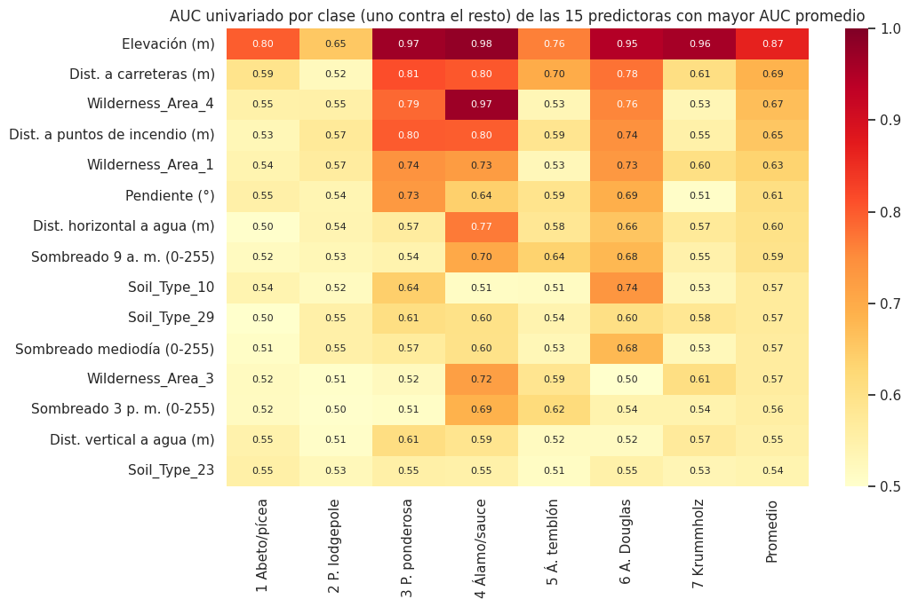
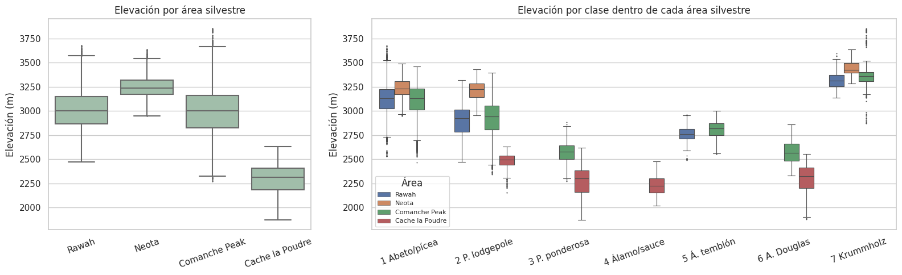

2.5–2.8 Fuga de información y estructura de los datos#
Mostrar código
import warnings
warnings.filterwarnings("ignore")
import numpy as np
import pandas as pd
import matplotlib.pyplot as plt
import seaborn as sns
from sklearn.metrics import roc_auc_score
from sklearn.neighbors import NearestNeighbors
from sklearn.preprocessing import StandardScaler
from _utils import (
CLASS_PALETTE, CLASS_SHORT, DISPLAY_NAMES, FEATURES, NUM_COLS, RANDOM_STATE, WILD_NAMES,
load_covertype, split_covertype, wilderness_label,
)
sns.set_theme(style="whitegrid", context="notebook")
df, X, y = load_covertype()
X_train, X_test, y_train, y_test = split_covertype(X, y)
area = wilderness_label(X_train)
2.5 Auditoría de fuga de información#
Disponibilidad de las variables en el momento de la predicción#
El uso previsto del modelo es estimar la cobertura de una celda sin visitarla, a partir de cartografía existente. Se sigue la definición de fuga de Kaufman et al. [2012]: información en las predictoras que no estaría disponible en el momento real de la predicción. La pregunta clave de la auditoría es si cada predictora estaría disponible en ese momento y si fue construida sin conocer la cobertura.
Grupo de variables |
¿Disponible antes de conocer la cobertura? |
Justificación |
|---|---|---|
Elevación, orientación y pendiente |
Sí |
Se derivan de modelos digitales de elevación del USGS, independientes de la vegetación |
Índices de sombreado |
Sí |
Se calculan de forma determinística a partir de la orientación, la pendiente y la posición del sol |
Distancias horizontal y vertical al agua |
Sí |
Provienen de la red hidrográfica cartografiada |
Distancia a carreteras |
Sí |
Proviene de la red vial cartografiada |
Distancia a puntos de incendio |
Sí, con una salvedad |
Proviene del registro histórico de puntos de ignición; es anterior a la etiqueta, pero los incendios pueden haber influido en la cobertura actual (relación causal legítima, no fuga) |
Área silvestre |
Sí |
Es una delimitación administrativa |
Tipo de suelo |
Sí, con una salvedad |
Proviene del inventario de unidades ecológicas terrestres (ELU) del USFS. Algunas unidades ELU se definen combinando suelo y vegetación, por lo que ciertos tipos podrían codificar información parcial sobre la cobertura |
Identificadores y variables derivadas del objetivo. El conjunto no contiene identificadores de fila, códigos de rodal ni variables calculadas a partir de Cover_Type. Tampoco hay variables posteriores a la etiqueta, como cambios de cobertura o variables de manejo forestal.
Desempeño individual de cada predictora#
Se calcula el AUC univariado de cada predictora para cada clase, usando el valor crudo de la variable como puntaje en un esquema uno contra el resto. Se reporta \(\max(\text{AUC}, 1 - \text{AUC})\), de modo que 0,5 indica ausencia de señal y 1 una separación perfecta. Valores superiores a 0,95 se consideran una señal de alerta que debe justificarse.
Mostrar código
filas = {}
for col in FEATURES:
filas[col] = [
max(a, 1 - a) for a in (roc_auc_score(y_train == k, X_train[col]) for k in range(1, 8))
]
auc = pd.DataFrame(filas, index=[CLASS_SHORT[k] for k in range(1, 8)]).T
auc["Promedio"] = auc.mean(axis=1)
auc = auc.sort_values("Promedio", ascending=False)
fig, ax = plt.subplots(figsize=(11, 7))
top = auc.head(15)
sns.heatmap(top, annot=True, fmt=".2f", cmap="YlOrRd", vmin=0.5, vmax=1, ax=ax,
yticklabels=[DISPLAY_NAMES.get(c, c) for c in top.index], annot_kws={"size": 8})
ax.set_title("AUC univariado por clase (uno contra el resto) de las 15 predictoras con mayor AUC promedio")
plt.tight_layout()
plt.show()
alertas = auc.drop(columns="Promedio").stack()
alertas = alertas[alertas > 0.95].sort_values(ascending=False).rename("AUC").to_frame()
alertas.index.names = ["Predictora", "Clase"]
alertas.round(3)

| Predictora | Clase | AUC |
|---|---|---|
| Elevation | 4 Álamo/sauce | 0.980 |
| Wilderness_Area_4 | 4 Álamo/sauce | 0.970 |
| Elevation | 3 P. ponderosa | 0.967 |
| Elevation | 7 Krummholz | 0.959 |
Ninguna predictora separa de forma casi perfecta el conjunto de clases: el AUC promedio más alto es el de la elevación (≈ 0,87). Sin embargo, cuatro combinaciones de predictora y clase superan el umbral de 0,95:
La elevación para el álamo/sauce, el pino ponderosa y el krummholz (y, muy cerca del umbral, para el abeto de Douglas, con 0,947). No es fuga: es el gradiente altitudinal de la vegetación de montaña. Las especies se distribuyen en franjas de altitud por su tolerancia a la temperatura y a la humedad, algo documentado en la ecología de las Montañas Rocosas. La elevación está disponible antes de la predicción y no se deriva de la cobertura.
El área silvestre 4 (Cache la Poudre) para el álamo/sauce. Tampoco es fuga en sentido estricto, porque la delimitación del área es independiente de la vegetación. Pero sí es un proxy geográfico: el álamo/sauce solo existe en esa área dentro de la muestra, de modo que el modelo puede aprender «Cache la Poudre implica álamo/sauce posible», una regla que no se trasladaría a otras regiones.
Duplicados y entidades repetidas entre particiones#
Mostrar código
def redondear(df_):
r = df_.copy()
r["Elevation"] = (r["Elevation"] / 10).round()
for col in ["Horizontal_Distance_To_Hydrology", "Horizontal_Distance_To_Roadways", "Horizontal_Distance_To_Fire_Points"]:
r[col] = (r[col] / 30).round()
r["Vertical_Distance_To_Hydrology"] = (r["Vertical_Distance_To_Hydrology"] / 5).round()
for col in ["Hillshade_9am", "Hillshade_Noon", "Hillshade_3pm"]:
r[col] = (r[col] / 5).round()
return r
claves_train = pd.MultiIndex.from_frame(X_train)
claves_test = pd.MultiIndex.from_frame(X_test)
exactos = claves_test.isin(claves_train).sum()
rtrain = pd.MultiIndex.from_frame(redondear(X_train))
rtest = pd.MultiIndex.from_frame(redondear(X_test))
casi = rtest.isin(rtrain)
pd.Series(
{
"Filas de prueba con un duplicado exacto en entrenamiento": f"{int(exactos)}",
"Filas de prueba con un casi-duplicado en entrenamiento": f"{int(casi.sum())}",
"Porcentaje de la prueba con casi-duplicado": f"{100 * casi.mean():.2f} %",
},
name="Valor",
).to_frame()
| Valor | |
|---|---|
| Filas de prueba con un duplicado exacto en entrenamiento | 0 |
| Filas de prueba con un casi-duplicado en entrenamiento | 102 |
| Porcentaje de la prueba con casi-duplicado | 0.09 % |
No hay filas de prueba idénticas a filas de entrenamiento, y solo 102 celdas de prueba (0,09 %) tienen un casi-duplicado en entrenamiento, es decir, una celda con el mismo suelo y área y valores prácticamente iguales en todas las variables continuas. Probablemente se trata de celdas vecinas de un mismo rodal. Su número es tan pequeño que la fuga directa por celdas casi idénticas es despreciable. Sin embargo, la dependencia espacial puede operar a una escala mayor: celdas cercanas que se parecen sin ser casi idénticas y que comparten la misma cobertura. Esa forma de dependencia no se detecta con este chequeo, y se analiza en la sección 2.7 y en el capítulo 3.
Conclusión de la auditoría#
Variable |
Estado |
Justificación |
|---|---|---|
Todas las variables cartográficas |
Se conservan |
Disponibles antes de la predicción e independientes de la etiqueta |
|
Se conserva, en observación |
AUC > 0,95 para tres clases por el gradiente altitudinal; relación causal legítima |
|
Se conserva, en observación |
Proxy geográfico del álamo/sauce; se evalúa su efecto con validación por área |
|
Se conservan, en observación |
Algunas unidades ELU pueden incorporar información de vegetación en su definición |
Variables descartadas |
Ninguna |
No hay identificadores, variables posteriores a la etiqueta ni derivadas del objetivo |
2.6 Componente temporal#
El conjunto no tiene componente temporal: no incluye fechas, horas ni periodos, y todas las celdas describen el estado del bosque en una misma fecha de referencia de la cartografía del USFS. Los índices de sombreado se refieren a horas del día (9 a. m., mediodía y 3 p. m.), pero son atributos geométricos del terreno calculados para el solsticio de verano, no mediciones en el tiempo.
En consecuencia, no aplican la partición cronológica, las pruebas de estacionariedad (ADF y KPSS), la descomposición STL [Cleveland et al., 1990] ni el análisis de autocorrelación temporal. La principal limitación temporal es la antigüedad de los datos: la cartografía es anterior a 1998, de modo que no refleja cambios posteriores de la cobertura por incendios, plagas (como el escarabajo del pino de montaña) o cambio climático. Un modelo entrenado con estos datos debe validarse con cartografía reciente antes de usarse para decisiones actuales.
2.7 Componente espacial#
El conjunto no incluye latitud ni longitud, ni coordenadas proyectadas. Por eso no es posible calcular el I de Moran, los indicadores LISA, los hotspots de Getis-Ord ni el semivariograma, ni construir bloques espaciales con celdas o clusters geográficos. Aun así, los datos tienen estructura espacial, y se analiza con la información disponible: el área silvestre, que funciona como una unidad geográfica gruesa.
Heterogeneidad espacial entre áreas#
Mostrar código
orden_areas = list(WILD_NAMES.values())
datos = X_train[["Elevation"]].assign(Area=area.values, Clase=y_train.map(CLASS_SHORT).values)
muestra = datos.sample(60000, random_state=RANDOM_STATE)
fig, axes = plt.subplots(1, 2, figsize=(16, 5), gridspec_kw={"width_ratios": [1, 2]})
sns.boxplot(data=muestra, x="Area", y="Elevation", order=orden_areas, ax=axes[0], color="#9cc3a8", fliersize=1)
axes[0].set_title("Elevación por área silvestre")
axes[0].set_xlabel("")
axes[0].set_ylabel("Elevación (m)")
axes[0].tick_params(axis="x", rotation=20)
sns.boxplot(data=muestra, x="Clase", y="Elevation", hue="Area", hue_order=orden_areas,
order=[CLASS_SHORT[k] for k in range(1, 8)], ax=axes[1], fliersize=0.5, linewidth=0.8)
axes[1].set_title("Elevación por clase dentro de cada área silvestre")
axes[1].set_xlabel("")
axes[1].set_ylabel("Elevación (m)")
axes[1].tick_params(axis="x", rotation=20)
axes[1].legend(title="Área", fontsize=8)
plt.tight_layout()
plt.show()
resumen_area = pd.DataFrame(
{
"Celdas": area.value_counts(),
"Elevación mediana (m)": X_train.groupby(area.values)["Elevation"].median(),
"Clases presentes": pd.Series({a: y_train[area == a].nunique() for a in orden_areas}),
"Clase dominante": pd.Series({a: CLASS_SHORT[y_train[area == a].mode()[0]] for a in orden_areas}),
}
).loc[orden_areas]
resumen_area

| Celdas | Elevación mediana (m) | Clases presentes | Clase dominante | |
|---|---|---|---|---|
| Rawah | 208521 | 3002.0 | 4 | 2 P. lodgepole |
| Neota | 23870 | 3240.0 | 3 | 1 Abeto/pícea |
| Comanche Peak | 202787 | 2997.0 | 6 | 2 P. lodgepole |
| Cache la Poudre | 29631 | 2314.0 | 4 | 3 P. ponderosa |
Interpretación:
Las áreas difieren en su rango altitudinal. Cache la Poudre es mucho más baja que las otras tres (mediana de 2.314 m) y Neota es la más alta (3.240 m); Rawah y Comanche Peak están cerca de los 3.000 m. Parte de la asociación entre área y cobertura es, en realidad, la asociación entre elevación y cobertura.
La relación entre elevación y cobertura cambia según el área. Como muestra el panel derecho, la franja de altitud de una misma clase depende del área: el pino lodgepole tiene una elevación mediana cercana a 2.500 m en Cache la Poudre y a 3.200 m en Neota, y el pino ponderosa y el abeto de Douglas están unos 250 m más abajo en Cache la Poudre que en Comanche Peak. Una misma altitud, por tanto, no implica la misma cobertura en todas las áreas. Esto es heterogeneidad espacial: el efecto de una variable depende de la ubicación, lo que un modelo lineal global sin interacciones no puede capturar.
La diversidad de clases varía entre áreas. Comanche Peak tiene seis de las siete clases; Neota, solo tres.
Algunas clases están restringidas a un área. El álamo/sauce solo aparece en Cache la Poudre y el pino ponderosa, casi solo allí. Para esas clases, generalizar a zonas nuevas es difícil, porque el modelo nunca ha visto la clase en otro contexto.
Autocorrelación espacial y efecto de la escala#
En datos de cobertura vegetal a 30 m de resolución, es de esperar autocorrelación espacial: los rodales ocupan muchas celdas contiguas con condiciones parecidas y la misma cobertura. Sin coordenadas no se puede medir su alcance con el I de Moran, pero sí anticipar su efecto: con una partición aleatoria, la validación es optimista para zonas nuevas, porque el modelo se evalúa en celdas vecinas de las que usó para aprender.
Respecto a la escala, la unidad de análisis es fija (celdas de 30 m) y la etiqueta corresponde a la cobertura dominante de cada celda. Agregar a rodales o a cuencas cambiaría las proporciones de clase y las relaciones con las variables (problema de la unidad de área modificable), lo que conviene tener presente al comparar estos resultados con estudios a otras escalas.
Prueba de vecindad entre prueba y entrenamiento#
Sin coordenadas, el I de Moran no se puede calcular, pero el optimismo que produce la autocorrelación espacial sí se puede cuantificar de otra forma: para cada celda de prueba se busca su vecino más cercano en el espacio de las variables cartográficas numéricas (estandarizadas) dentro del conjunto de entrenamiento, y se compara su clase con la de ese vecino. Dos celdas contiguas en el terreno comparten casi los mismos valores de elevación, distancias y sombreado, de modo que esta cercanía en el espacio de variables es el mejor sustituto disponible de la cercanía geográfica real.
Mostrar código
escalador = StandardScaler().fit(X_train[NUM_COLS])
Xtr_num = escalador.transform(X_train[NUM_COLS])
Xte_num = escalador.transform(X_test[NUM_COLS])
vecinos = NearestNeighbors(n_neighbors=1, algorithm="kd_tree", n_jobs=-1).fit(Xtr_num)
dist_vecino, idx_vecino = vecinos.kneighbors(Xte_num)
dist_vecino = dist_vecino.ravel()
clase_vecino = y_train.to_numpy()[idx_vecino.ravel()]
misma_clase = clase_vecino == y_test.to_numpy()
decil = pd.qcut(dist_vecino, 10, labels=[f"D{i+1}" for i in range(10)])
tabla_vecindad = pd.DataFrame({"Distancia": dist_vecino, "Misma clase que el vecino": misma_clase, "Decil": decil})
resumen_vecindad = tabla_vecindad.groupby("Decil", observed=True).agg(
Distancia_media=("Distancia", "mean"),
Coincidencia_de_clase=("Misma clase que el vecino", "mean"),
)
resumen_vecindad.round(3)
| Decil | Distancia_media | Coincidencia_de_clase |
|---|---|---|
| D1 | 0.091 | 0.962 |
| D2 | 0.141 | 0.947 |
| D3 | 0.169 | 0.942 |
| D4 | 0.192 | 0.936 |
| D5 | 0.213 | 0.927 |
| D6 | 0.236 | 0.913 |
| D7 | 0.262 | 0.901 |
| D8 | 0.295 | 0.883 |
| D9 | 0.343 | 0.870 |
| D10 | 0.469 | 0.840 |
Mostrar código
print(f"Coincidencia de clase con el vecino más cercano (global): {misma_clase.mean():.3f}")
print(f"Coincidencia en el decil más cercano (D1): {tabla_vecindad[tabla_vecindad['Decil'] == 'D1']['Misma clase que el vecino'].mean():.3f}")
print(f"Coincidencia en el decil más lejano (D10): {tabla_vecindad[tabla_vecindad['Decil'] == 'D10']['Misma clase que el vecino'].mean():.3f}")
Coincidencia de clase con el vecino más cercano (global): 0.912
Coincidencia en el decil más cercano (D1): 0.962
Coincidencia en el decil más lejano (D10): 0.840
La coincidencia de clase con el vecino más cercano de entrenamiento cae de forma monótona conforme aumenta la distancia: del 96,2 % en el decil más cercano al 84,0 % en el más lejano (91,2 % en conjunto). Esto confirma, sin necesidad de coordenadas, que las celdas de prueba más próximas en el espacio de variables a una celda de entrenamiento heredan buena parte de su etiqueta por simple cercanía —el mecanismo típico de la autocorrelación espacial—, mientras que las celdas más alejadas de cualquier punto de entrenamiento son, de entrada, más difíciles de acertar. La validación con partición aleatoria estratificada (capítulo 3) es, por tanto, optimista para el subconjunto de celdas de prueba que caen muy cerca de una celda de entrenamiento, y ese optimismo se suma al que ya identifica la validación por área del mismo capítulo.
Consecuencias para el modelado#
Pregunta de generalización. El objetivo principal del proyecto es predecir la cobertura de celdas no inventariadas dentro de las mismas áreas que cubre la muestra. Para ese objetivo, la partición estratificada aleatoria es adecuada, con la salvedad del leve optimismo por vecindad.
Prueba de sensibilidad. Para medir la capacidad de generalizar a zonas nuevas, en el capítulo 3 se evalúa el modelo con validación por grupos (
GroupKFold), dejando fuera un área silvestre completa en cada pliegue. Es el análogo disponible de la validación por bloques espaciales.Coordenadas crudas. No se dispone de coordenadas, de modo que no hay riesgo de que el modelo memorice la ubicación exacta. El área silvestre sí actúa como variable geográfica gruesa y se conserva por ser una delimitación administrativa conocida en el momento de la predicción.
2.8 Componente espacio-temporal#
El conjunto no tiene componente temporal (sección 2.6), de modo que el análisis espacio-temporal no aplica: no hay mapas por periodo, series por zona, hotspots emergentes ni autocorrelación espacio-temporal que estudiar.